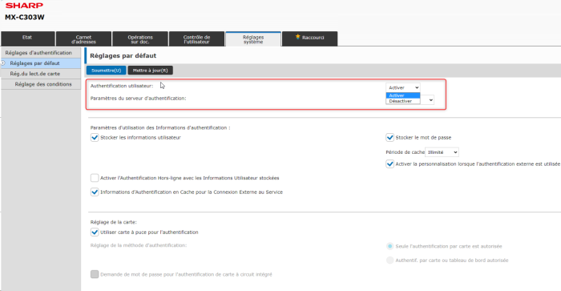

WES Sharp - Prérequis et configuration préalable
Configurer les ports
Les ports réseau à ouvrir pour permettre le fonctionnement des WES sont les suivants :
| Source | Port | Protocole | Cible |
| Service Watchdoc | TCP 80 TCP 443 |
HTTP HTTPS |
Périphérique d'impression |
Versions du navigateur
Le WES v.3 est compatible avec les modèles équipés du navigateur G2.
Activer l'authentification utilisateur
Pour certains périphériques d'impression Sharp, la configuration de l'authentification préalable sur le périphérique d'impression est nécessaire avant d'installer le WES. Lorsque cette configuration n'a pas été effectuée, l'écran d'accueil du WES Watchdoc n'apparaît pas.
Pour activer l'authentification :
-
connectez-vous au périphérique d'impression en tant qu'administrateur ;
-
rendez-vous sur Réglages systèmes > réglages d'authentification ;
-
dans l'interface Réglages par défaut > Authentification utilisateur, sélectionnez Activer :

-
Cliquez sur Soumettre pour valider la configuration.
Activer les options MX AMX / BP-AM
La technologie Sharp OSA (Open Systems Architecture) est une structure qui relie directement la machine aux applications logicielles et permet ainsi l’interconnexion avec des applications tierces telles que le WES de Watchdoc.
Cette technologie est composée d'options dont les 2 suivantes interagissent avec Watchdoc :
-
AMX2 (ou BP-AM10)
-
AMX3 (ou BP-AM11)
Ces modules sont installés par défaut sur les modèles MX-M3071, MXM3071S, MX- M3571, MX- M3571S, MX- M4071, MX- M4071S, MX- M5071, MXM5071S, MX-M6071, MX-M6071S.
En revanche, ils doivent être installées sur les modèles MX-M265, MX-M3051, MX-M3551, MX-M4051, MX-M5051 et MXM6051 pour permettre un bon fonctionnement de Watchdoc sur les versions antérieures à la v. 6.1.0.5290.
Lorsque ces modules ne sont pas présents sur le périphérique, un message d'erreur apparaît lors de l'installation du WES, empêchant la finalisation de l'installation.
A partir de Watchdoc v. 6.1.0.5290, seule l'option AMX2 (BP-AM10) est nécessaire au bon fonctionnement du WES, en-dehors de WEScan qui nécessite l'option AMX3 (BP-AM11).
Notez cependant que pour une expérience utilisateur optimisée, nous recommandons l'installation des 2 options AMX2 (BP-AM10) et AMX3 (BP-AM11).
Activez l'option AMX2 - BP-MX10
-
A l'aide d'un navigateur, accédez à l'interface web du périphérique ;
-
authentifiez-vous avec un compte administrateur ;
-
dans le menu, cliquez sur Réglages système > Réglages Sharp OSA > Réglages de l'application standard ;
-
dans l'interface Enregistrement de l'application standard, complétez les champs :
-
Nom de l'application : saisissez le nom de l'application "Watchdoc" ou "Mes impressions" ;
-
Adresse de l'interface utilisateur de l'application : saisissez l'url http://IPSERVEUR:5754/dsp/Sharp/Osa/2.0/Web/Jobs
ou, si vous êtes en SSL, saisissez l'url https://IPSERVEUR:5753/dsp/Sharp/Osa/2.0/Web/Jobs

-
Activez l'option AMX3 - BP-MX11
-
A l'aide d'un navigateur, accédez à l'interface web du périphérique ;
-
authentifiez-vous avec un compte administrateur ;
-
dans le menu, cliquez sur Réglages système > Réglages Sharp OSA > Réglages de compte externe ;
-
dans l'interface Contrôle de compte externe, complétez les paramètres :
-
Contrôle externe de comptes : sélectionnez Activer ;
-
Régler le serveur d'authentification : cochez la case ;
-
Nom de l'application : saisissez le nom de l'application "Watchdoc" ou "Mes impressions" ;
-
Adresse de l'interface utilisateur de l'application : saisissez l'url http://IPSERVEUR:5754/dsp/Sharp/Osa/3.0/Web/Login
ou, si vous êtes en SSL, https://IPSERVEUR:5753/dsp/Sharp/Osa/3.0/Web/Login
-
Adresse des services web : saisissez l'url http://IPSERVEUR:5754/dsp/Sharp/Osa/1.0/Service
ou, si vous êtes en SSL, https://IPSERVEUR:5753/dsp/Sharp/Osa/1.0/Service
-
Dépassement du délai : conservez la valeur choisie comme délai durant lequel le périphérique dialogue avec le serveur.

-
-
Une fois les modules activés, vérifiez que les deux options figurent sous l'onglet Règlages système > Réglages Sharp OSA > Réglages de l'application standard.